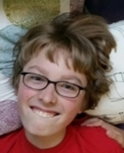
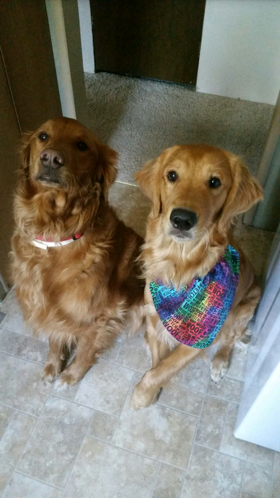

Dear Robert: I'm going to be honest, I kept forgetting your birthday, so I'm sorry, but to be fair, I also have no idea how old you are, or how old you are turning now because my memory lasts as long as a fruit flies life. I hope you can understand and move past this, because to be fair, I did make you guys a game revolving around our cat, so... Just please forgive me.
To be fair: I'm having the time of my life here in Seattle, because it's nothing like Colton, and Colton sucks. You understand, you go there. At least I remembered soon enough to make you a website. It's dedicated completely to you, and to get you to forgive me, (especially on your birthday) I placed a picture of Hunter and Mags (in his ADORABLE bandana, no less) at the bottom of the screen to ease your mind and help you accept my mistake.
I hope you'll understand: I even made the background your favorite color, turquoise, unless that's changed, and to be quite honest, it wouldn't surprise me if I had just forgotten about it, so I apologize for that too, unless I was correct, in which case, :D | I have now come back from calling you, and it turns out that you like sky blue, pink, and magenta. Unfortunately, I cannot do all those colors, as the webiste would be waaaaay to hard to read, so instead, I have made it dark blue, sky blue, and a light magenta, and it's not that bad. You're welcome.
Okay, now: I will finally write what the point of this entire website dedicated to you will be about, which is that I hope you have a fantastic birthday, but not the best birthday ever, because that would be pretty sad if this was your best birthday ever seeing as you're only in the range of 12-15 years old now, (because I don't remember how old you're turning) you'll have tons more great birthdays in the future. :)
Stanley Supreme: Just because this game is great.
(: (: Please forgive me :) :)
I texted mom just now to get you a birthday present off your list, so hopefully she pulled through and saved my butt from that humiliation, although, to be fair, I was also so humiliated about forgetting your birthday and what age you're turning that I actually made you an entire website just for yourself about my humiliation, so, you know. Also, I'll have you know that my "friends" are making fun of me for writing so much, but they don't understand the passion I have for making websites about a person when I forget their birthday. I hope you enjoy this, and I hope you enjoy your birthday. Tell Oliver I love him (And Stanley, Magnum, Hunter, and Rex [of course]). HAVE A GRRRRRRRRREAT BIRTHDAY! | As I have just come back from calling you, Mom said that she did indeed get my text, so you can be assured that if for some reason you didn't get your present (aside from this, but nothing can be better than this) it will be Mom's fault, not mine, so feel free to not blame me. I worked very hard on this, so I hope this proves that I want you to have a good birthday despite the fact that I barely know when it will be or how old you will be turning. I'm not looking forwards to living on my own without anyone to remind me about birthdays... please always call and remind me. Thank you. Love you! Happy Birthday! :D
